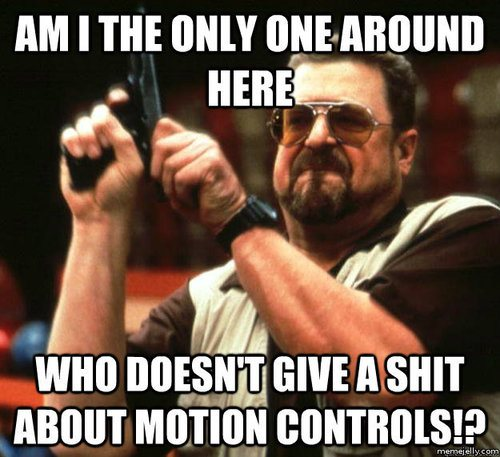
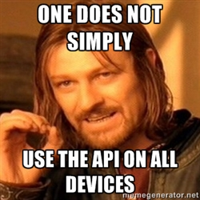

Reactive Orientation
@zapletal_martin, @teroxik
Application overview
- HTML5 orientation API
- Ember.js
- Three.js
- Play framework 2.3
- Iteratee/Enumerator
- Web socket actors
- sbt-web
- Scalaz
- Bootstrap
HTML 5 orientation API

HTML 5 orienation
DeviceOrientationEvent
Event provides values in degrees which are difference between device and earth coordinates.
window.addEventListener("deviceorientation", processEvent, true);

Rotation
Rotation is described about any given axis in terms of the number of degrees of difference between the device's coordinate frame and the Earth coordinate frame, and is measured in degrees.
-
Earth Coordinates
- The X axis follows along the ground plane, perpendicular to the Y axis and positive toward the east (and therefore negative toward the west).
- The Y axis follows along the ground plane, and is positive toward true north (that is, the North Pole, not magnetic north) and negative toward true south.
- The Z axis is perpendicular to the ground plane; think of it as a line drawn between the device and the center of the Earth. The value of the Z coordinate is positive upward (away from the center of the Earth) and negative downward (toward the center of the Earth).
-
Device Coordinates
- The X axis is in the plane of the screen and is positive toward the right and negative toward the left.
- The Y axis is in the plane of the screen and is positive toward the top and negative toward the bottom.
- The Z axis is perpendicular to the screen or keyboard, and is positive extending outward from the screen.
HTML 5 orientation API - Caveats + Support

Support
Supported by most of the Android(Firefox,Chrome) and iOS-based browsers
Not supported by default Android browsers in older versions
Caveats
iOS-based browsers deviceOrientationData.alpha as an arbitrary non-compass-based value.
It has to be recomputed = (360 - deviceOrientationData.webkitCompassHeading)
Links
http://dev.opera.com/articles/w3c-device-orientation-usage/
Iteratee/Enumerator/Enumeratee
- abstraction over data streams
- handle data streams reactively in a non-blocking, generic & composable way for modern web programming in distributed environments
- websockets in our case
- Iteratee => Consumer
- Enumerator => Producer
Iteratee
- abstraction over data streams
- handle data streams reactively in a non-blocking, generic & composable way for modern web programming in distributed environments
- websockets in our case
- Iteratee => Consumer
- Enumerator => Producer
Enumerator
- abstraction over data streams
- handle data streams reactively in a non-blocking, generic & composable way for modern web programming in distributed environments
- websockets in our case
- Iteratee => Consumer
- Enumerator => Producer
Enumeratee
- abstraction over data streams
- handle data streams reactively in a non-blocking, generic & composable way for modern web programming in distributed environments
- websockets in our case
- Iteratee => Consumer
- Enumerator => Producer
Web Socket Actors
- abstraction over data streams
- handle data streams reactively in a non-blocking, generic & composable way for modern web programming in distributed environments
- websockets in our case
- Iteratee => Consumer
- Enumerator => Producer
Sneak peak - sbt-web
- abstraction over data streams
- handle data streams reactively in a non-blocking, generic & composable way for modern web programming in distributed environments
- websockets in our case
- Iteratee => Consumer
- Enumerator => Producer
WebGL
-
WebGL is 2D API
Slide content is simple HTML.
-
Canvas
-
Vertex Shader
Add extra functionality to your deck, or leave it stripped down.
-
Fragment Shader
JsFiddle + Small Introduction
-
Coordinates
<-1;1>
Three.js
-
Camera
Slide content is simple HTML.
-
Scene
-
Objects
geometries => objects in the scene, lights => shadows generation
-
Renderer
JsFiddle + Small Introduction
-
Coordinates
<-1;1>
Scalaz
- The coolest library noone uses.
- Provides purely functional data structures to complement those from the Scala standard library
- Requires deep understanding of functional programming idioms
- The good parts of Scalaz
Scalaz
Typeclasses
3.show()
1.node(2.leaf, 3.node(4.leaf))
List(some(1), none).suml
Scalaz
Validation
"event 1 ok".success[String]
"event 1 failed!".failure[String]
http://eed3si9n.com/learning-scalaz/Validation.html
("event 1 ok".success[String] |@| "event 2 failed!".failure[String] |@| "event 3 failed!".failure[String]) {_ + _ + _}
\/
Questions?
Thank you for your patience!
/